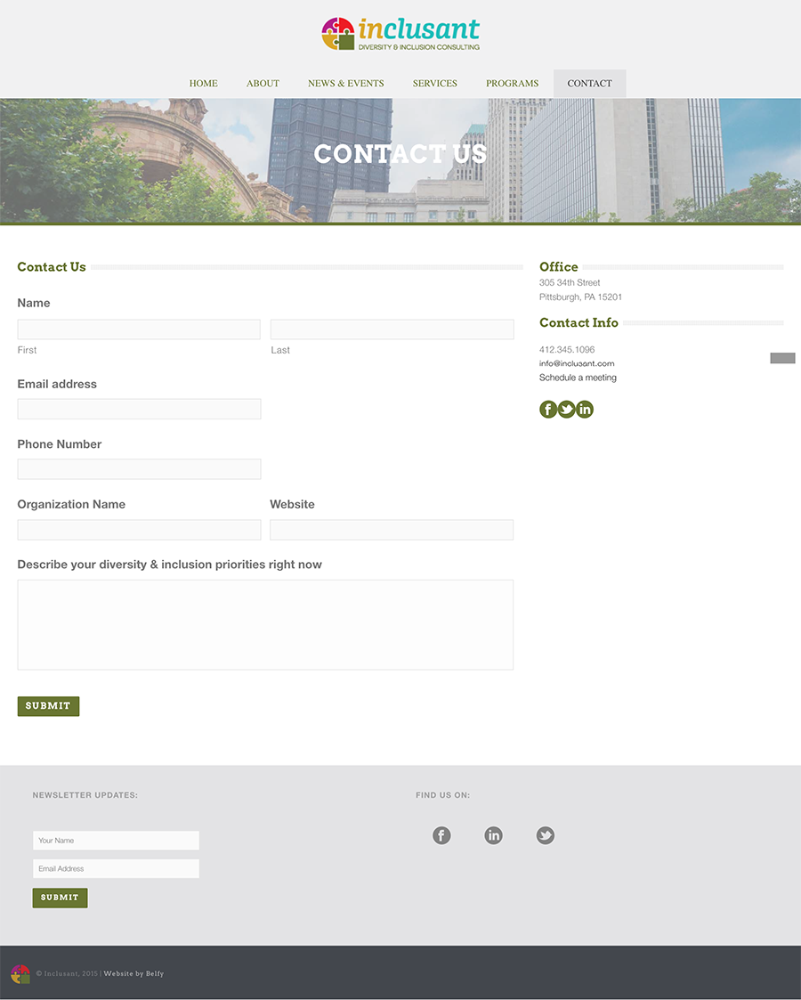

Our main priority was to address the project opportunity by developing and implementing a technological solution that would fulfill Inclusant’s needs, build capacity for the organization, and be sustainable for the future. In order to do so, we first needed to understand how the organization operates, conducts its client onboarding process, and manages its information within the existing technological infrastructure.
Organizational Structure & Operations
Inclusant is a relatively small organization, with most of its operations handled by the primary consultant. To help with running programs and providing trainings, Inclusant relies on a network of subcontractor consultants who are also diversity and inclusion specialists. The organization has a limited technological infrastructure, so processes are manually handled.
Original Process for Intaking a New Client
This process can be both time and labor intensive because of the inefficient back and forth exchanges. The amount of time and effort spent towards this initial process directly impacts the capacity of the organization to take on more clients and lead more trainings.
Project Outcomes
Our goal was to streamline the matching process between potential client organizations and subcontractor consultants in Inclusant’s network, in order to allow for more time to be spent working with clients and providing trainings. In order to do so, our solution encompassed 2 parts:
- Designing and creating a diagnostic questionnaire for potential clients to share more specifically what they are looking for through working with Inclusant
- Improving the overall information architecture and user experience of the oragnization's website so that potential clients can more easily find what they're looking for
Diagnostic Process Questionnaire
The diagnostic process questionnaire we created most directly allowed us to address our project goal - to make the matching process of potential client to subcontractor consultant more efficient. We began by conducting a competitive analysis by researching different diversity & inclusion consulting sites and taking note of how other firms organized their information, as well as where they placed their call to action button to schedule a consultation and how that process worked.
On Inclusant's original site, the form to schedule a consultation provided the same information as the Contact Us form, which only included a few open ended questions about reasons for reaching out. We hypothesized that a large factor which contributed to the amount of time spent figuring out how to best address a potential client's needs was trying to figure out what those needs were in the first place. We thought that if we created a form that covered specific pieces of information that were necessary to facilitate a working relationship - from location of sessions (onsite or remote), duration of sessions, what type of service they required, etc. - that would make the entire process more efficient.
We used Inclusant’s previous Client Intake Form as inspiration and brainstormed questions and other pieces of information that would be useful to Inclusant in fitting a subcontractor consultant to potential clients’ needs. Working closely with our community partner, we improved the content and wording to ensure that the resulting form would allow Incluant to learn as much as possible about the needs of the potential client, while keeping it easy to use and understand for the user. We focused on transitioning questions from open ended questions to multiple choice or checkboxes - this lessens confusion from vague answers from potential clients and allows Inclusant to take action quicker because the needs are more immediately identified. The finalized questionnaire can be found on the Schedule a Consultation page on the new website.
A selection of the questionnaire
New Website: Improved User Experience & Information Architecture
In order to implement the improvements we envisioned, we built Inclusant a new website within their existing framework. The resulting outcomes from the development of the new site include user testing results, user requirements for the new site, a competitive analysis of other diversity & inclusion consulting firms' sites, wireframes, documentation & style guide, and finally, a working Wordpress website.
In the beginning, we spent time understanding the content and structure of the original Inclusant website through user testing. We created a user testing script to evaluate how easy to use the site was, and selected tasks that were important for potential clients to be able to perform intuitively. Examples of these tasks were registering for Inclusant’s main program Creating Confluence and scheduling a consultation.
Using our testing script, we performed user tests to understand how people interacted with the original site. The main takeaways from the tests were:
- Information was very difficult to find since there was a lot of information being thrown at the users, which made it very overwhelming.
- Visually, there was not a lot of consistency across the pages. There were a lot of different colors and fonts, and the information was not organized in any intuitive way.
- The navigation was difficult to use because Services & Resources were grouped together and the Programs button was not clickable even though it looked like it should be, so users couldn't find relevant information.
Compiling our user testing results, we created wireframes that reflected the cleaner, simpler interface we were going for. After in depth conversations with our community partner about the purpose and functionality of each page, we further simplified the website to only include the pages that supported how Inclusant currently operates. The changes we made aimed to reduce the cognitive load on the users, establish credibility of the organization with consistent formatting, and improve the information flow to allow users and potential clients to easily find information they’re looking for and direct them to the Schedule a Consultation form. We also ensured that the website was mobile responsive so all functionality is easily accessible and the information layout is optimized.
The old website:
Original Programs Page

Original Contact Form
The new website:
Conclusion
Overall, our project built capacity for Inclusant by allowing the organization to reallocate their time from matching potential clients to subcontractor consultants to directly working with clients on trainings and workshops. By streamlining the flow of public information and eliminating many of the back and forth exchanges in the process to understand what a potential client is looking for, the new website supports a more efficient approach to onboarding new clients.
We prioritized sustainability so our solution could be maintained and up to date even when we were no longer directly working on the project. It was important that what we built existed within the original technological infrastructure and could be easily updated by the organization. After we finished developing the new site, we created a Documentation & Style Guide to hand off to our community partner and facilitated a training session with Inclusant's website manager to explain how the new site operated.